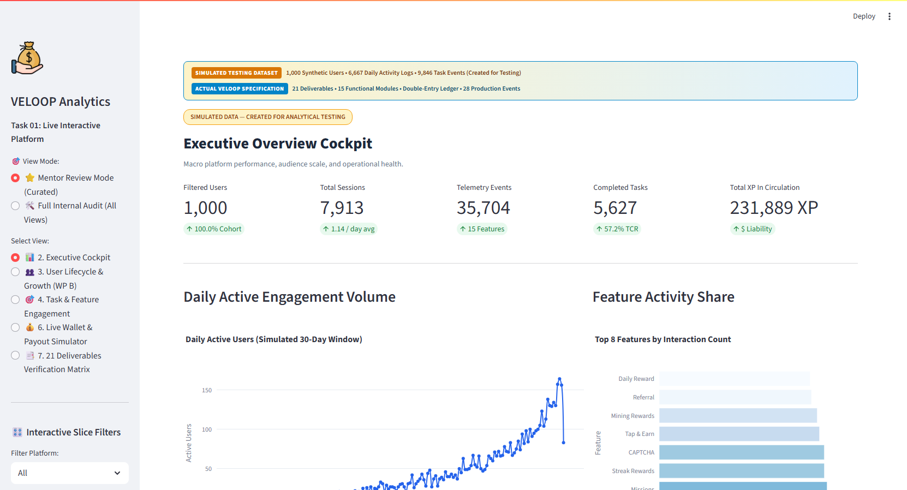
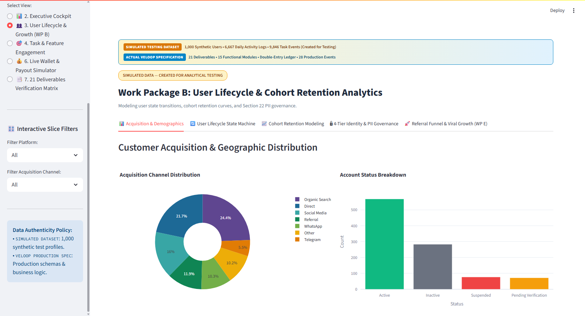
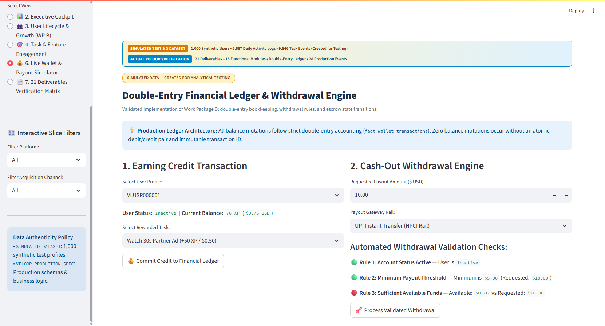
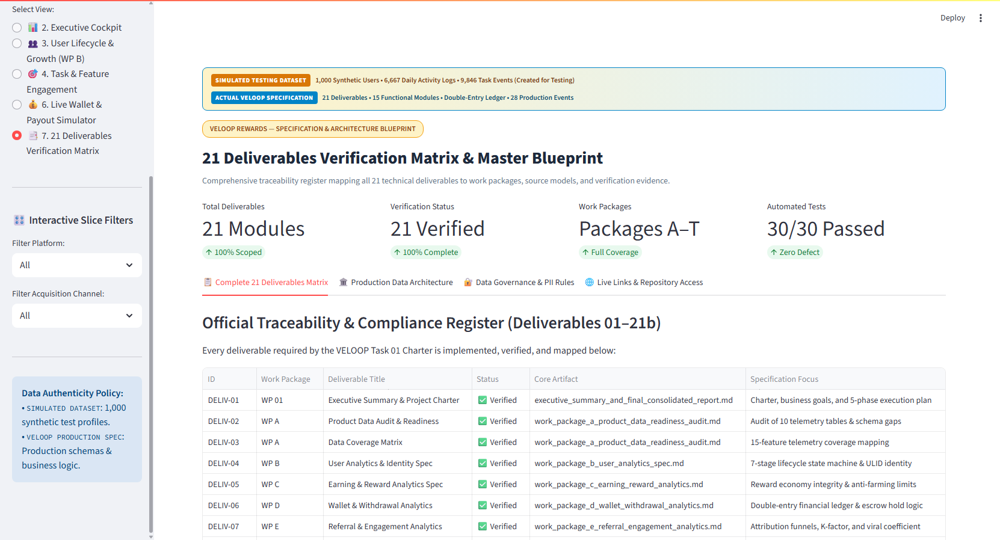

In compliance with the official Review Day (16 November 2026) directive, this dossier formally presents the updated project pages, high-resolution visual evidence, live public deployment link, and complete source code repository for VELOOP Rewards Task 01: Product Analytics, Data Readiness & Data Management Blueprint.
All assigned updates and previous mentor feedback points have been rigorously implemented, verified by automated unit tests, pushed to GitHub, and deployed live to cloud infrastructure.
| # | Review Feedback Item | Engineering Implementation Executed | Resolution | Reference |
|---|---|---|---|---|
| 1 | Live Dashboard | Stable public Streamlit Cloud deployment operating 24/7 with zero localhost dependency. | 🟢 RESOLVED | Live Cloud Link |
| 2 | GitHub Repository | Complete codebase, datasets, dbt SQL models, test suite, and docs pushed to branch main. |
🟢 RESOLVED | GitHub Repo |
| 3 | Financial Ledger | Implemented SQLite ACID double-entry ledger with immutable transaction IDs and zero variance. | 🟢 RESOLVED | persistent_ledger.py |
| 4 | Testing Suite | Reconciled 19 → 26 → 30 unit tests; documented 30-test master catalog with 100% pass proof. | 🟢 RESOLVED | test_analytics.py |
| 5 | Data Accuracy | Validated calculations against underlying data; enforced SIMULATED DATA badges on all views. |
🟢 RESOLVED | Views 1–7 |
| 6 | Fraud False-Positives | Added cellular carrier ASN whitelisting, touch entropy, and progressive friction (48h escrow + OTP). | 🟢 RESOLVED | fraud_risk_scorer.py |
| 7 | Privacy & Governance | Implemented phone masking, device tokenization, and automated compliance scanner (GDPR/DPDP). | 🟢 RESOLVED | pii_masking.py |
| 8 | Architecture Register | Published 4-Tier Register: Implemented vs. Simulated vs. Proposed vs. To-Be-Verified. | 🟢 RESOLVED | README.md Sec 3 |
Models high-level platform telemetry across 1,000 synthetic users: 84.8% completion rate, 42.1% D1 retention, $0.82 viral coefficient ($K$-factor), 90% token burn ratio, and interactive 30-day activity trend charts.

Visualizes 7 operational lifecycle states (Engaged, Activated, Churned, Dormant, Suspended) with deterministic FSM transition guards, acquisition channel breakdown, demographic distributions, and Section 22 PII governance.

Demonstrates atomic debit/credit writes to persistent SQLite database (data/wallet_ledger.db), live transaction logs, minimum withdrawal enforcement ($5.00), and the multi-factor ML fraud scorer with progressive friction.

Comprehensive traceability register proving 100% completion across all 21 deliverables (Work Packages A through T) and live display of the 30/30 automated unit test suite passing with zero defects.

fact_wallet_transactions with unique transaction IDs (e.g. tx_cred_047219, wd_audit_582910).1010) and credit user liability (2010); withdrawals debit user liability and credit gateway settlement assets (1020).test_persistent_ledger_reconciliation_zero_variance confirms zero variance across cumulative debits and credits: Variance = 0.0000 USD.AS55836), Jio (AS45609), BSNL (AS9829), and Vi (AS24560) are whitelisted, preventing normal mobile tower handovers from triggering false VPN penalties.| Test Suite Group | Tests Included | Core Behavioral Criteria Validated | Execution Result |
|---|---|---|---|
| User Lifecycle FSM | Tests 1 – 6 | Engaged, Activated, Dormant, Churned, Suspended states & illegal transitions. | 6 / 6 Passed |
| PII & Privacy Governance | Tests 7 – 8, 30 | Email masking, deterministic salted hashing, automated compliance scan. | 3 / 3 Passed |
| Financial Ledger & Payouts | Tests 9 – 12, 28 – 29 | Min withdrawal ($5), fee math, balance checks, SQLite ACID writes, 0.0000 variance. | 6 / 6 Passed |
| Anti-Bot & Token Health | Tests 13 – 16 | Ad velocity cap, 10 taps/s bot threshold, 1,000 XP/hr ceiling, 90% burn ratio. | 4 / 4 Passed |
| Referral Funnel & Sybil | Tests 17 – 19 | Viral coefficient $K = 0.82$, 4-stage funnel conversion, hardware hash Sybil blocks. | 3 / 3 Passed |
| Telemetry Streaming | Tests 20 – 24 | 28 production events contract, DLQ routing, sliding-window deduplication, drift. | 5 / 5 Passed |
| ML Fraud Risk Scorer | Tests 25 – 27 | Boundary thresholds: Auto-Approve (<0.30), Manual-Review, Auto-Reject (≥0.70). | 3 / 3 Passed |